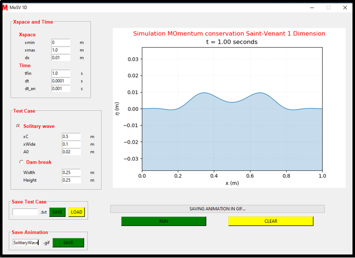

<!DOCTYPE html>
<html lang="en">
  <head>
    <meta charset="utf-8" />
    <meta content="width=device-width, initial-scale=1.0" name="viewport" />

    <title>Portfolio Details</title>
    <meta content="" name="description" />
    <meta content="" name="keywords" />

    <!-- Favicons -->
    <link href="assets/img/favicon.png" rel="icon" />
    <link href="assets/img/apple-touch-icon.png" rel="apple-touch-icon" />

    <!-- Google Fonts -->
    <link href="https://fonts.googleapis.com/css?family=Open+Sans:300,300i,400,400i,600,600i,700,700i|Raleway:300,300i,400,400i,500,500i,600,600i,700,700i|Poppins:300,300i,400,400i,500,500i,600,600i,700,700i" rel="stylesheet" />

    <!-- Vendor CSS Files -->
    <link href="assets/vendor/aos/aos.css" rel="stylesheet" />
    <link href="assets/vendor/bootstrap/css/bootstrap.min.css" rel="stylesheet" />
    <link href="assets/vendor/bootstrap-icons/bootstrap-icons.css" rel="stylesheet" />
    <link href="assets/vendor/boxicons/css/boxicons.min.css" rel="stylesheet" />
    <link href="assets/vendor/glightbox/css/glightbox.min.css" rel="stylesheet" />
    <link href="assets/vendor/swiper/swiper-bundle.min.css" rel="stylesheet" />

    <!-- Template Main CSS File -->
    <link href="assets/css/style.css" rel="stylesheet" />

    <!-- =======================================================
  * Template Name: iPortfolio - v3.3.0
  * Template URL: https://bootstrapmade.com/iportfolio-bootstrap-portfolio-websites-template/
  * Author: BootstrapMade.com
  * License: https://bootstrapmade.com/license/
  ======================================================== -->
  </head>

  <body>
    <!-- ======= Mobile nav toggle button ======= -->
    <i class="bi bi-list mobile-nav-toggle d-xl-none"></i>

    <!-- ======= Header ======= -->
    <header id="header">
      <div class="d-flex flex-column">
        <div class="profile">
          
          <h1 class="text-light"><a href="index.html">Hendro Saragih</a></h1>
          <div class="social-links mt-3 text-center">
            <a href="#" class="twitter"><i class="bx bxl-twitter"></i></a>
            <a href="#" class="facebook"><i class="bx bxl-facebook"></i></a>
            <a href="#" class="instagram"><i class="bx bxl-instagram"></i></a>
            <a href="#" class="google-plus"><i class="bx bxl-skype"></i></a>
            <a href="#" class="linkedin"><i class="bx bxl-linkedin"></i></a>
          </div>
        </div>

        <nav id="navbar" class="nav-menu navbar">
          <ul>
            <li>
              <a href="index.html#hero" class="nav-link scrollto active"><i class="bx bx-home"></i> <span>Home</span></a>
            </li>
            <li>
              <a href="index.html#about" class="nav-link scrollto"><i class="bx bx-user"></i> <span>About</span></a>
            </li>
            <li>
              <a href="index.html#resume" class="nav-link scrollto"><i class="bx bx-file-blank"></i> <span>Resume</span></a>
            </li>
            <li>
              <a href="#index.html#portfolio" class="nav-link scrollto"><i class="bx bx-book-content"></i> <span>Portfolio</span></a>
            </li>
            <li>
              <a href="index.html#services" class="nav-link scrollto"><i class="bx bx-server"></i> <span>Services</span></a>
            </li>
            <li>
              <a href="index.html#contact" class="nav-link scrollto"><i class="bx bx-envelope"></i> <span>Contact</span></a>
            </li>
          </ul>
        </nav>
        <!-- .nav-menu -->
      </div>
    </header>
    <!-- End Header -->

    <main id="main">
      <!-- ======= Breadcrumbs ======= -->
      <section id="breadcrumbs" class="breadcrumbs">
        <div class="container">
          <div class="d-flex justify-content-between align-items-center">
            <h2><strong>MoSV1D - Simulation Wave : Momentum Conservation Saint Venant 1 Dimension</strong></h2>
            <ol>
              <li><a href="index.html">Home</a></li>
              <li>Portfoio Details</li>
            </ol>
          </div>
        </div>
      </section>
      <!-- End Breadcrumbs -->

      <!-- ======= Portfolio Details Section ======= -->
      <section id="portfolio-details" class="portfolio-details">
        <div class="container">
          <div class="row gy-4">
            <div class="col-lg-8">
              <div class="portfolio-details-slider swiper-container">
                <div class="swiper-wrapper align-items-center">
                  <div class="swiper-slide">
                    
                  </div>

                  <div class="swiper-slide">
                    
                  </div>

                  <div class="swiper-slide">
                    
                  </div>

                </div>
                <div class="swiper-pagination"></div>
                <div class="portfolio-description">
                  <h3><strong>Pendahuluan</strong></h3>
                  <p style="text-align: justify">
                    Dengan kemajuan teknologi dan komputasi di era sekarang, model matematika dapat dihampiri secara 
numerik dan dapat dilakukan komputasi dan di simulasikan oleh komputer. Tetapi kelemahan skema numerik 
adalah membutuhkan waktu perhitungan yang lama. Di tulisan ini, akan dijelaskan skema numerik sta untuk 
persamaan SWE-Exner dijalankan dengan skema algoritma paralel (dengan OpenMP) dan serial. 
Kesulitan dalam menghasilkan animasi berdasarkan model matematika yaitu Saint-Venant 1D menyebabkan 
banyak orang kesulitan dalam menentukan hasil animasi dari model tersebut dengan parameter-parameter yang 
telah di tentukan. Dalam menghasilkan animasi tersebut di perlukan perhitungan berdasarkan metode Volume 
Hingga (Finite Volume Method) pada grid dengan skema staggered sehingga butuh proses yang Panjang. Oleh 
karena itu di butuhkan sebuah aplikasi untuk dapat menghasilkan animasi berdasarkan inout parameter-parameter 
yang telah di tentukan oleh pengguna.
                  </p>
                  <h4><strong>Latar Belakang</strong></h4>
                  <p style="text-align: justify">
                    Agar banyak kalangan pengguna yang dapat memodelkan gelombang dengan menggunakan model 
                    matematika gelombang Saint-Venant (SV) 1D ini. Maka akan di buat ke dalam bentuk aplikasi yang akan 
                    menerima inputan berupa angka ke dalam entri dan akan di jalankan menggunakan tombol run. Sehingga 
                    menghasilkan bentuk animasi dari pemodelan matematika gelombang Saint-Venant atau Shallow Water Equation 
                    1D. Hasil dari animasi ini juga nantinya akan dapat di simpan dalam bentuk file (.gif). Dalam mempermudah 
                    pengguna di butuhkan juga penyimpanan data test dari parmeter-parameter yang telah di inputkan. Oleh karena 
                    itu akan di bangun system untuk penyimpanan data test test tersebut ke dalam file (.txt)
                    Di dalam penelitian ini akan di bahas terkait simulasi menggunakan model matematika gelombang SaintVenant (SV) atau Shallow Water Equations (SWE) 1D. Dimana Model Saint-Venant ini diimplementasikan secara 
                    numerik dengan menggunakan metode Volume Hingga (Finite Volume Method) pada grid dengan skema 
                    staggered. Kasus yang akan di bahas dalam pemodelan ini ada 2, yaitu propagasi gundukan air tanpa kecepatan 
                    awal, dan simulasi dam-break 1D. Sehingga pengguna mampu menentukan kasus yang akan di lakukan animasinya 
                    terhadap pemodelan Saint-Venant ini. 
                    Untuk melakukan instalasi dan panduan penggunaan aplikasi ini, maka nantinya akan di sediakan sebuah 
                    manual book dalam 2 bahasa yaitu bahasa indonesia dan bahasa inggris. Sehingga pengguna dapat terbantu dalam 
                    menggunakan aplikasi ini. Aplikasi ini hanya akan kompatibel di gunakan di system operasi windows 10
                  </p>  
                  <h4><strong>Topik dan Batasannya</strong></h4>
                  <p style="text-align: justify">
                    Berdasarkan masalah yang telah disampaikan di atas, maka dapat ditarik beberapa rumusan masalah, 
yaitu: Melakukan Simulasi terhadap model Saint-Venant 1D atau Shallow Water Equation 1D dengan cara 
mengimplementasikan secara numerik menggunakan metode Volume Hingga (Finite Volume Method) pada grid 
dengan skema staggered ke dalam bentuk aplikasi
                  </p>
                  <h4><strong>Hasil Pengujian</strong></h4>
                  <p style="text-align: justify">
                    Data dalam Simulasi Saint-Venant ini berupa parameter-parameter yang di simpan dalam bentuk file (.txt). 
Parameter-paramter tersebut adalah xmin, xmax, dx, tfin, dt, dt_an dan intial condition. Terdapat 2 kasus initial 
condition yaitu solitary wave dan dam break. Pada kasus solitary wave memiliki parameter xC, xwide dan A0 
sedangkan kasus dam break memiliki parameter width dan height. Data hanya dapat di jalankan melalui aplikasi 
MoSV 1D. Dalam melakukan animasi data tersebut akan di proses melalui aplikasi sehingga menghasilkan 
animasi sesuai kasus yang di tentukan. 
                  </p>  
                  <h4><strong>Kesimpulan</strong></h4>
                  <p style="text-align: justify">
                    Berdasarkan hasil dan anilisis Tugas Akhir ini, diperoleh kesimpulan bahwa aplikasi MoSV-1D dapat 
menghasilkan output berupa hasil animasi 2 case yaitu dam-break dan solitary wave. Berdasarakan parameter input 
yaitu xmin, xmax, dx, tfin, dt, dt_an. Kemudian menentukan case yang akan ditentukan yaitu solitary wave
memiliki parameter input Xc, xwide & A0 dan dam break memiliki parameter input width & height. Parameter 
input akan melakukan komputasi melalui aplikasi MoSV-1D sehingga menghasilkan output berupa animasi 
pemodelan saint-venant 1 dimensi berdasarkan kasus yang dipilih.
                  </p>  
                </div>
              </div>
            </div>

            <div class="col-lg-4">
              <div class="portfolio-info">
                <h3>Project information</h3>
                <ul>
                  <table width="380" cellpadding="3" cellspacing="2" class="border">
                    <tr>
                      <td><strong>Category</strong></td>
                      <td>:</td>
                      <td>Apps Development</td>
                    </tr>
                    <tr>
                      <td><strong>Project Date</strong></td>
                      <td>:</td>
                      <td>Feb 2020 to May 2020</td>
                    </tr>
                    <tr>
                      <td><strong>Project URL</strong></td>
                      <td>:</td>
                      <td><a href="https://github.com/hendrosaragih/MoSV-1D-MOmentum-conservation-Saint-Venant-1-Dimension-" target="_blank"> MoSV1D Apps</a></td>
                    </tr>
                    <tr>
                      <tr>
                        <td><strong>Article</strong></td>
                        <td>:</td>
                        <td><a href="https://hendrosaragih.medium.com/manual-book-simulation-momentum-conservation-saint-venant-1-dimension-a771c1052b34" target="_blank">MoSV1D - Medium</a></td>
                      </tr>
                      <td><strong>Tools</strong></td>
                      <td>:</td>
                      <td>Python, Tkinter, Matplotlib, Numpy</td>
                    </tr>
                  </table>
                </ul>
              </div>

              <div class="portfolio-description">
                <h2>Abstract - MoSV1D</h2>
                <p style="text-align: justify">
                  MoSV 1D or Momentum Conservation Saint-Venant 1 Dimension is a Windows-based application to simulate 1D 
longwave propagation. This application is based on the mathematical model of the wave Saint-Venant (SV) or 
Shallow Water Equations (SWE) 1D. The SV Model is implemented numerically using the Finite Volume Method 
on a grid with a staggered scheme. There are two examples of cases in this application, namely propagation of 
water bumps without initial velocity, and 1D dam-break simulation. The 1S MoSV numerical model is written in 
Python, and is packaged in a Windows application.
                </p>
                <h2>--------------------------------------</h2>
                <p style="text-align: justify">MoSV 1D atau Momentum Conservation Saint-Venant 1 Dimension merupakan aplikasi berbasis Windows untuk 
                  mensimulasikan propagasi gelombang panjang 1D. Aplikasi ini berdasarkan model matematika gelombang Saint Venant (SV) atau Shallow Water Equations (SWE) 1D. Model SV ini diimplementasikan secara numerik dengan 
                  menggunakan metode Volume Hingga (Finite Volume Method) pada grid dengan skema staggered. Terdapat dua 
                  contoh kasus pada aplikasi ini, yaitu propagasi gundukan air tanpa kecepatan awal, dan simulasi dam-break 1D. 
                  Model numerik MoSV 1D ditulis dalam bahasa Python, dan dikemas dalam aplikasi Windows.</p>
              </div>
            </div>
          </div>
        </div>
      </section>
      <!-- End Portfolio Details Section -->
    </main>
    <!-- End #main -->

    <!-- ======= Footer ======= -->
    <footer id="footer">
      <div class="container">
        <div class="copyright">
          &copy; Copyright <strong><span>Hendro</span></strong>
        </div>
        <div class="credits">
          <!-- All the links in the footer should remain intact. -->
          <!-- You can delete the links only if you purchased the pro version. -->
          <!-- Licensing information: https://bootstrapmade.com/license/ -->
          <!-- Purchase the pro version with working PHP/AJAX contact form: https://bootstrapmade.com/iportfolio-bootstrap-portfolio-websites-template/ -->
          Designed by <a href="https://www.instagram.com/hendrosaragih/">Hendro</a>
        </div>
      </div>
    </footer>
    <!-- End  Footer -->

    <a href="#" class="back-to-top d-flex align-items-center justify-content-center"><i class="bi bi-arrow-up-short"></i></a>

    <!-- Vendor JS Files -->
    <script src="assets/vendor/aos/aos.js"></script>
    <script src="assets/vendor/bootstrap/js/bootstrap.bundle.min.js"></script>
    <script src="assets/vendor/glightbox/js/glightbox.min.js"></script>
    <script src="assets/vendor/isotope-layout/isotope.pkgd.min.js"></script>
    <script src="assets/vendor/php-email-form/validate.js"></script>
    <script src="assets/vendor/purecounter/purecounter.js"></script>
    <script src="assets/vendor/swiper/swiper-bundle.min.js"></script>
    <script src="assets/vendor/typed.js/typed.min.js"></script>
    <script src="assets/vendor/waypoints/noframework.waypoints.js"></script>

    <!-- Template Main JS File -->
    <script src="assets/js/main.js"></script>
  </body>
</html>
